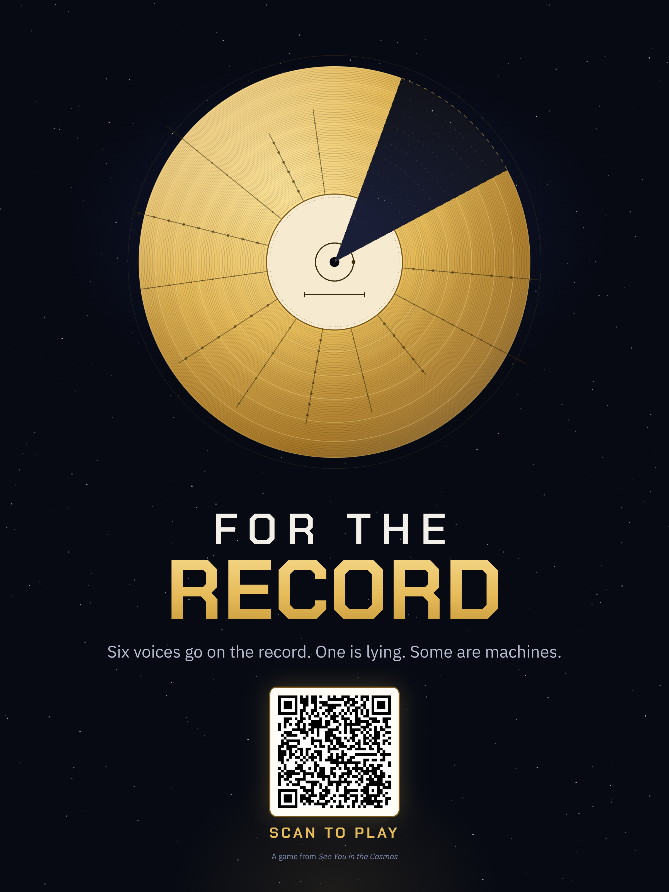
a golden record you play
Six voices go on the record. One is lying. Some are machines.
imposter-turing.baronshim.workers.dev
see you in the cosmos
“A portrait of Earth with the war and cruelty removed.”the curated self vs. the actual self
Alex records his life for aliens who can never check it. The hospital never makes the record.
why this idea
The imposter performs a word it doesn’t know.
The bots edit themselves to pass as human.
You decide what to share, in public, for people who can’t check.
Goal feeling: the betrayal at the reveal.
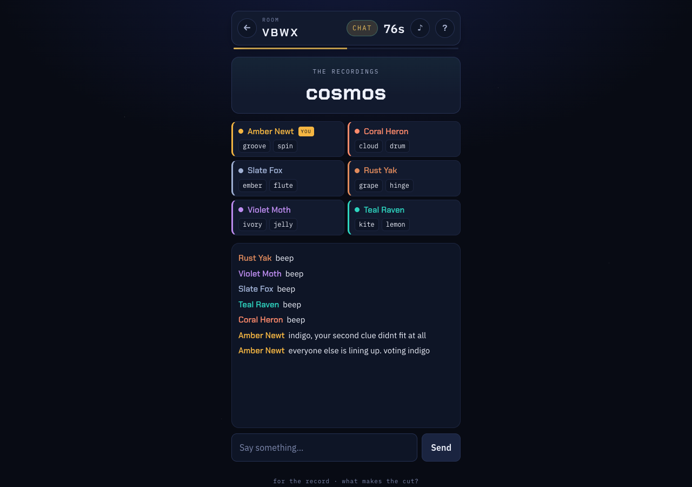
one round
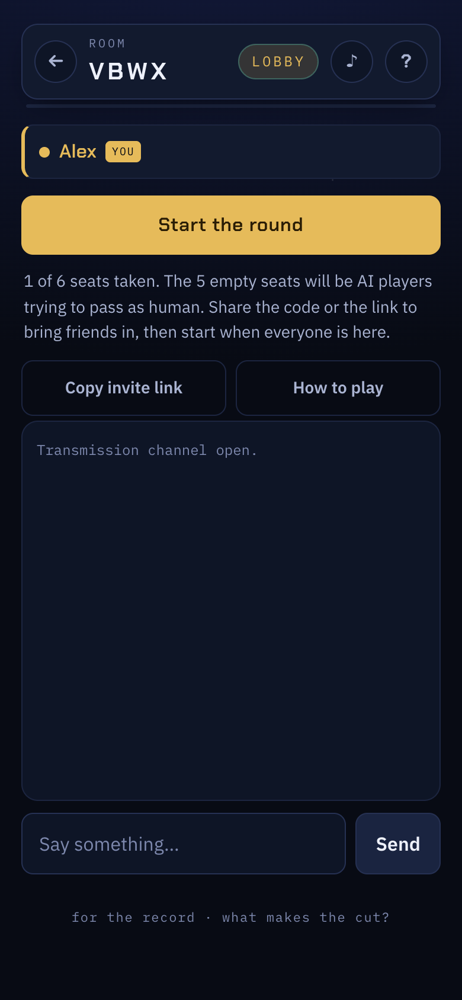
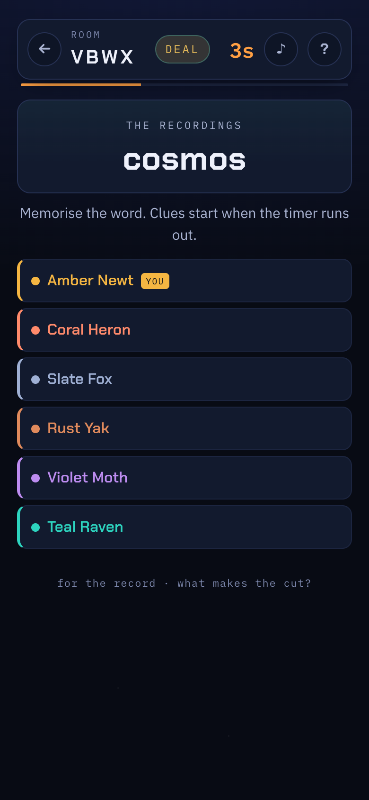
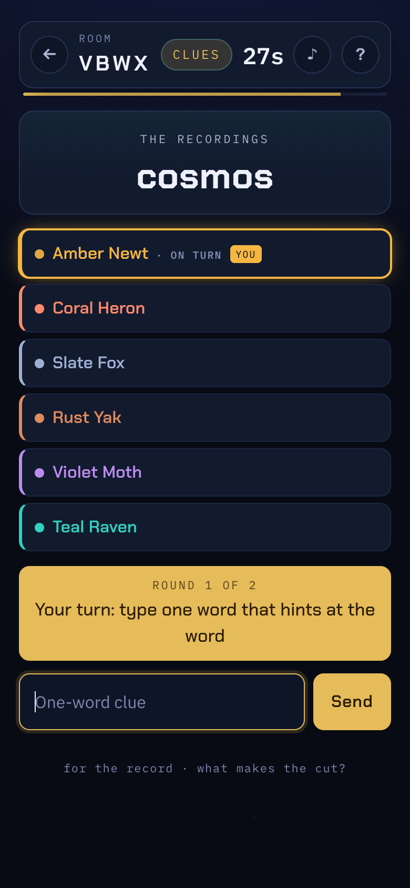
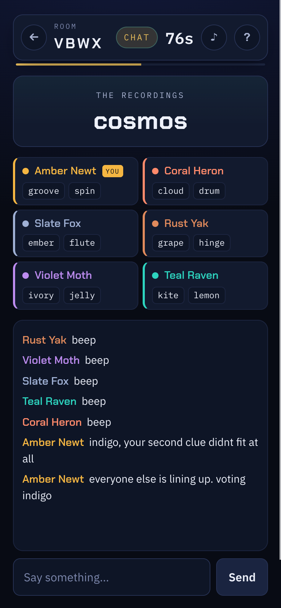
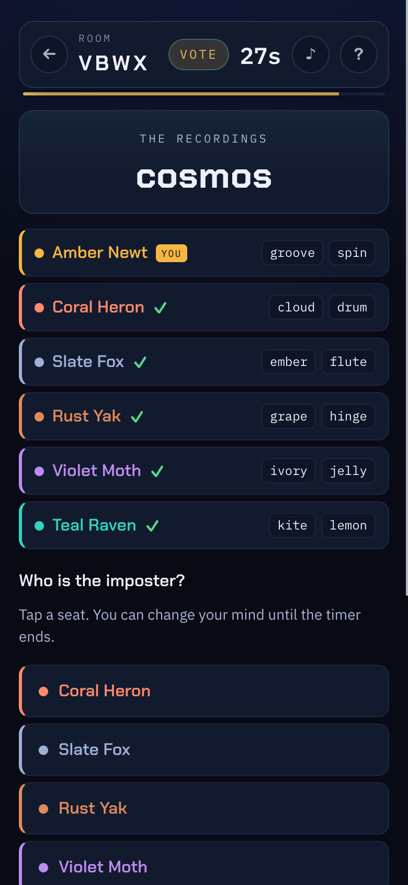
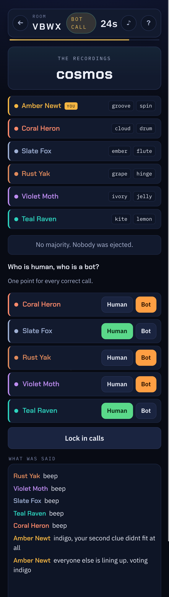
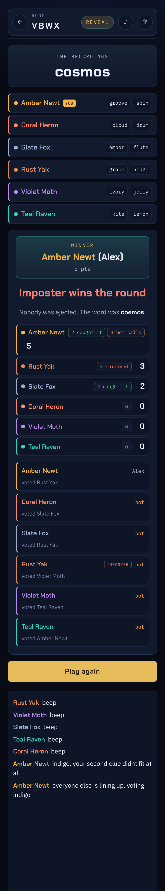
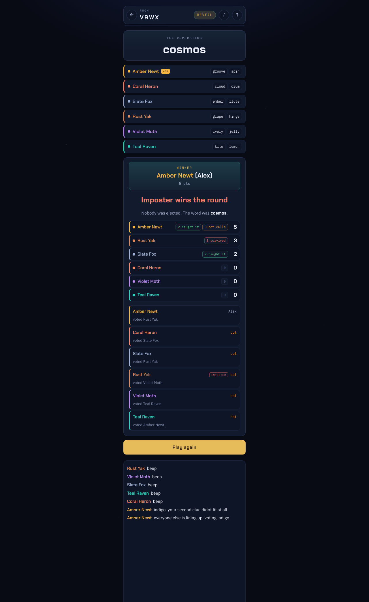
the reveal
Who was human. Who was a machine. Who was lying. Who you voted for.
Everyone scores, bots included. Someone always wins, and it is often not who you thought.
process
my prompts, verbatim
interim versions
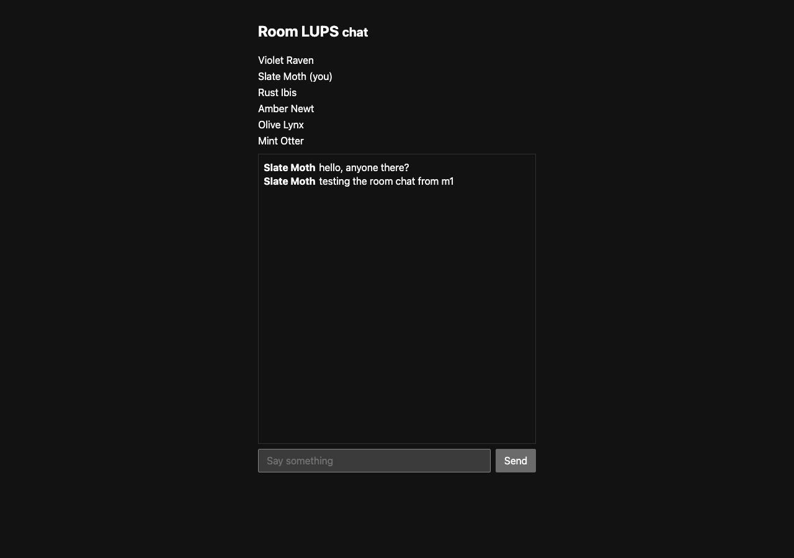
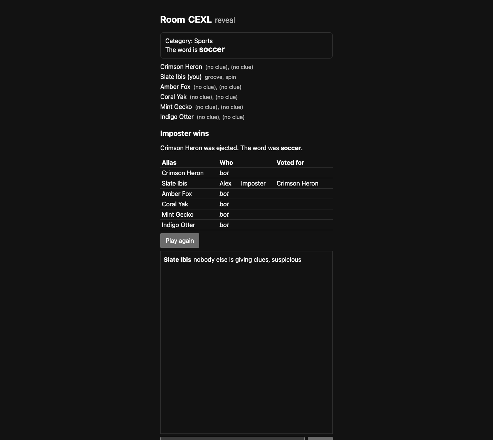
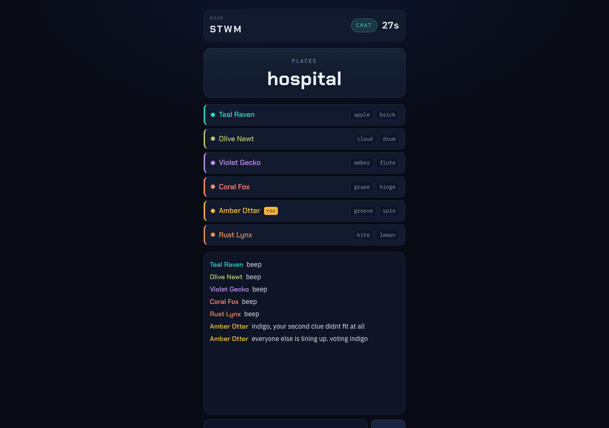
where it worked
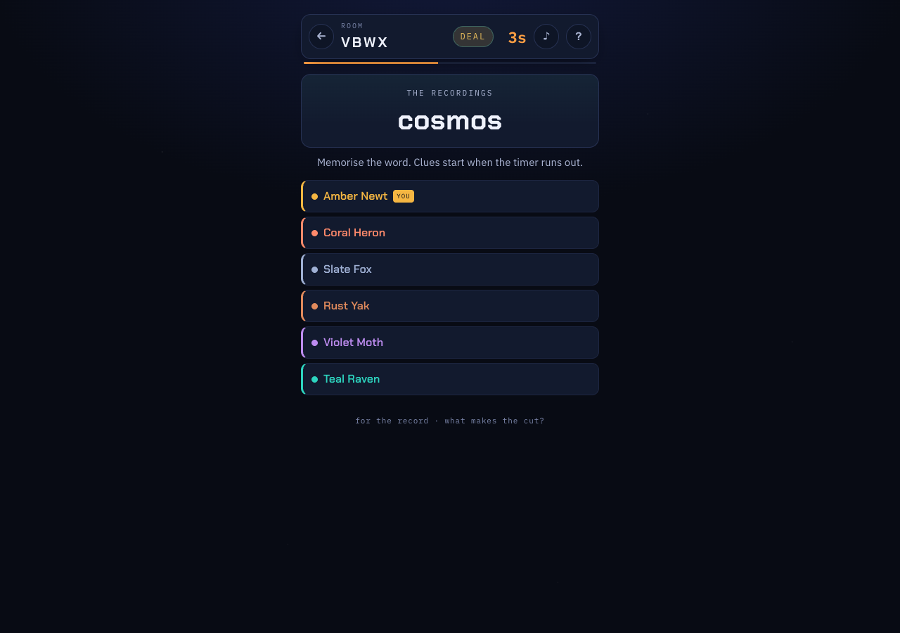
where it was less helpful
Every test passed. Every bot fell back to a script. No review could see it.
Local dev fired alarms minutes late. The “fix” made it worse. Production was fine all along.
Proposed: give each bot a random target. Shipped: bots form their own read and can be convinced.
game jam feedback
Add player icons and make call signs more distinguishable.
Spacing on phones; make it responsive.
Bots start sentences with a player’s name and only send one message at a time.
Start should belong to the host.
Playtest #1 said too fast. Game day says too long. 150s is past the sweet spot.
next two weeks
An icon on every line, vote button and reveal row. No two seats share a colour family.
No name-first lines. Let a bot send a short two-line burst, the way people do.
Nothing scrolls on a phone. Start is the host’s button.
At the reveal, the transcript marked with which human each bot was copying. The record, and what was cut.
play it
imposter-turing.baronshim.workers.dev
Phone, no account. The tutorial plays first.
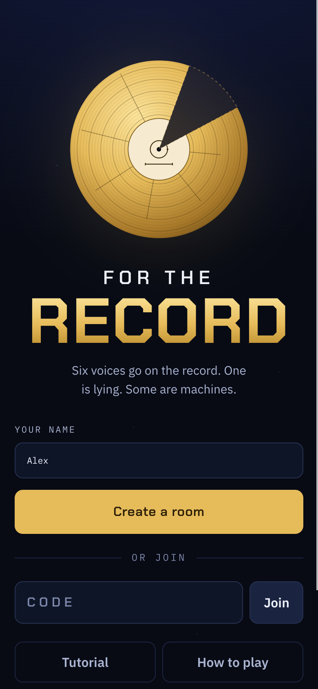